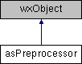

- Generated by
 1.9.4
1.9.4
|
AtmoSwing
|

Static Public Member Functions | |
| static bool | Preprocess (std::vector< asPredictor * > predictors, const wxString &method, asPredictor *result) |
| static bool | PreprocessSimpleGradients (std::vector< asPredictor * > predictors, asPredictor *result) |
| static bool | PreprocessRealGradients (std::vector< asPredictor * > predictors, asPredictor *result) |
| static bool | PreprocessSimpleGradientsWithGaussianWeights (std::vector< asPredictor * > predictors, asPredictor *result) |
| static bool | PreprocessRealGradientsWithGaussianWeights (std::vector< asPredictor * > predictors, asPredictor *result) |
| static bool | PreprocessSimpleCurvature (std::vector< asPredictor * > predictors, asPredictor *result) |
| static bool | PreprocessRealCurvature (std::vector< asPredictor * > predictors, asPredictor *result) |
| static bool | PreprocessSimpleCurvatureWithGaussianWeights (std::vector< asPredictor * > predictors, asPredictor *result) |
| static bool | PreprocessRealCurvatureWithGaussianWeights (std::vector< asPredictor * > predictors, asPredictor *result) |
| static bool | PreprocessAddition (std::vector< asPredictor * > predictors, asPredictor *result) |
| static bool | PreprocessAverage (std::vector< asPredictor * > predictors, asPredictor *result) |
| static bool | PreprocessDifference (std::vector< asPredictor * > predictors, asPredictor *result) |
| static bool | PreprocessMultiplication (std::vector< asPredictor * > predictors, asPredictor *result) |
| static bool | PreprocessFormerHumidityIndex (std::vector< asPredictor * > predictors, asPredictor *result) |
| static bool | PreprocessMergeByHalfAndMultiply (std::vector< asPredictor * > predictors, asPredictor *result) |
| static bool | PreprocessHumidityFlux (std::vector< asPredictor * > predictors, asPredictor *result) |
| static bool | PreprocessWindSpeed (std::vector< asPredictor * > predictors, asPredictor *result) |
| static void | GetHorizontalDistances (const a1d &lonAxis, const a1d &latAxis, a2f &distXs, a2f &distYs) |